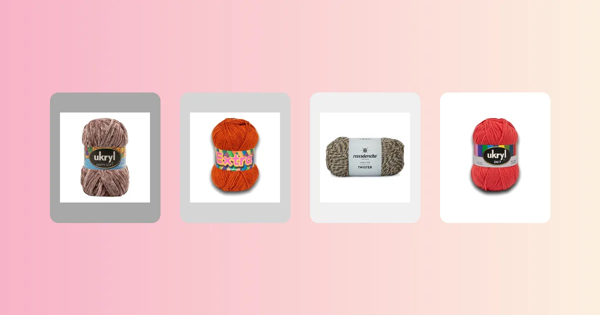

Proyectos de crochet
Cómo tejer pantuflas a crochet paso a paso
Las pantuflas a crochet son el proyecto perfecto para regalar o para darte un gusto: se tejen rápido, gastan poca lana y el resultado es una zapatilla abrigada, suave y con estilo artesanal. En esta guía tienes la tabla de tallas por número de calzado, el paso a paso de la suela, el empeine y el puño, cuántos ovillos comprar y cómo hacer que no resbalen.

Materiales para tejer tus pantuflas
Las pantuflas a crochet son uno de los proyectos más agradecidos que existen: se terminan en una tarde, usan poca lana y siempre hacen feliz a quien las recibe. Si ya practicaste los puntos básicos de crochet, tienes todo lo necesario para empezar. Y si ya tejiste unos calcetines a crochet, las pantuflas te van a resultar aún más fáciles porque la estructura es parecida pero más gruesa y rápida.
Para empezar necesitas:
- Entre 1 y 2 ovillos de 100 g de lana gruesa o semi gruesa. Un solo ovillo alcanza hasta la talla 38; desde la 39 conviene tener 2 ovillos del mismo color. Más abajo tienes la tabla exacta por lana.
- Un ganchillo acorde al hilo: 5 a 7 mm para lanas gruesas como Chenille o Twister. Si no sabes qué medida usar, revisa la guía de qué aguja o ganchillo usar para tejer.
- Marcadores de puntos: al menos 2, para marcar la punta y el talón de la suela.
- Aguja lanera y tijeras.
- Silicona caliente o pintura antideslizante para la suela (opcional pero muy recomendable).
La lana ideal para pantuflas necesita tres cosas: grosor para que la suela quede firme, suavidad para el contacto con el pie y resistencia para aguantar el uso diario. Estas son las mejores opciones del catálogo de VendoLanas:
- Lana Chenille, la más suave: Lana Chenille Café, Lana Chenille Gris o Lana Chenille Rosado. Textura aterciopelada que envuelve el pie con calidez, 100 m por ovillo. Ideal para pantuflas de regalo.
- Ukryl Extra, resistente y económica: Lana Extra Blanco o Lana Extra Terracota, con 100 m por ovillo. Da un tejido firme que aguanta bien el uso diario.
- Lana Twister Revesderecho, con textura jaspeada: Lana Twister Revesderecho Camel o Lana Twister Revesderecho Canela, con 150 m por ovillo. El efecto jaspeado disimula el desgaste y queda precioso en una pantufla tipo botín.
- Lana Ukryl 24/7, la más versátil: Lana Ukryl 24/7 Beige o Lana Ukryl 24/7 Coral, con 150 m por ovillo y 22 colores para elegir. Buen equilibrio entre suavidad y resistencia.
Cómo se arman unas pantuflas a crochet
Una pantufla básica de crochet se compone de tres partes que se tejen en secuencia, sin cortar la hebra:
- Suela: un óvalo plano que se teje en redondo desde una cadena central, con aumentos en la punta y el talón. Es la base de toda la pantufla.
- Empeine y laterales: se levantan puntos alrededor de la suela y se teje hacia arriba, cerrando la punta con disminuciones para cubrir el pie.
- Puño (borde superior): un ribete de 3 a 6 cm que abraza el tobillo para que la pantufla no se salga al caminar.
La ventaja de este método es que toda la pantufla se teje de una pieza, sin costuras. Solo necesitas la aguja lanera al final para esconder las hebras.
Si ya hiciste unos zapatitos de bebé a crochet, la estructura es idéntica pero en tamaño adulto. Y si tejiste un gorro a crochet, la técnica de tejer en redondo con aumentos es la misma que usarás para la suela.
Tabla de tallas por número de calzado
Las medidas corresponden a la suela terminada. Mide tu pie descalzo sobre una hoja y compara con el largo de suela. Si estás entre dos tallas, elige la más grande: el tejido cede un poco con el uso.
| Talla calzado | Largo de suela | Ancho de suela | Cadena base |
|---|---|---|---|
| 35 | 22,5 cm | 8,5 cm | 16 cadenas |
| 36 | 23 cm | 9 cm | 16 cadenas |
| 37 | 24 cm | 9 cm | 17 cadenas |
| 38 | 24,5 cm | 9,5 cm | 18 cadenas |
| 39 | 25,5 cm | 9,5 cm | 19 cadenas |
| 40 | 26 cm | 10 cm | 19 cadenas |
| 41 | 27 cm | 10 cm | 20 cadenas |
| 42 | 27,5 cm | 10,5 cm | 21 cadenas |
La cadena base se calcula para una tensión promedio con lana gruesa y ganchillo de 6 mm. Si tu muestra da más puntos por centímetro, ajusta sumando cadenas; si da menos, resta. Para conocer mejor los tipos de lana y elegir el grosor correcto, revisa nuestra guía completa.
Muestra de tensión
Antes de empezar, teje un cuadrado de muestra de al menos 10 x 10 cm en punto bajo con tu lana y ganchillo. La suela debe quedar bien compacta, así que si tu muestra queda suelta, baja una medida de ganchillo.
| Dato | Valor |
|---|---|
| Puntos en 10 cm (punto bajo) | 12 puntos |
| Hileras en 10 cm | 14 hileras |
| Largo de suela deseado | 24,5 cm |
| Cadena base | 18 cadenas |
En las pantuflas la muestra importa sobre todo para el largo de la suela. Si la suela queda 1 cm más corta que tu pie, agrega 1 cadena a la base. Si queda 1 cm más larga, resta 1 cadena. Para el método completo de cálculo, revisa la guía de cuánta lana necesito para tejer.
Paso 1: teje la suela
La suela es un óvalo plano que se teje en redondo alrededor de una cadena central. Los aumentos se concentran en los extremos (punta y talón) para crear la forma del pie.
- Cadena base: haz 18 cadenas (para talla 38 con Chenille y ganchillo 6 mm). La cadena base determina el largo de la suela menos el ancho.
- Vuelta 1: teje 1 punto bajo en la segunda cadena desde el ganchillo. Sigue con 1 punto bajo en cada cadena hasta la última. En la última cadena haz 3 puntos bajos (esto gira la esquina). Ahora teje por el otro lado de la cadena, 1 punto bajo en cada cadena. En la primera cadena (donde empezaste) haz 2 puntos bajos más. Cierra con punto raso. Coloca un marcador en la punta y otro en el talón.
- Vuelta 2: 1 cadena de aire. Teje 1 punto bajo en cada punto del lado recto. En los 3 puntos de la punta, haz 2 puntos bajos en cada uno (6 puntos en la punta). Lado recto de vuelta. En los 3 puntos del talón, haz 2 puntos bajos en cada uno (6 puntos en el talón). Cierra con punto raso.
- Vuelta 3: 1 cadena de aire. Lado recto sin cambios. En la punta: *1 punto bajo, 2 puntos bajos en el siguiente* (repite 3 veces = 9 puntos en la punta). Lado recto. En el talón: *1 punto bajo, 2 puntos bajos en el siguiente* (repite 3 veces = 9 puntos en el talón). Cierra.
- Vuelta 4: repite el patrón de aumentos alternados en punta y talón: *2 puntos bajos, 2 en el siguiente* (repite 3 veces en cada extremo). Cierra.
- Vuelta 5 (opcional para tallas 40+): un aumento más en cada extremo con la misma lógica. Para tallas 35 a 39, 4 vueltas de suela suelen ser suficientes.
Al terminar la suela, debería medir el largo indicado en la tabla de tallas. Si queda corta, agrega una vuelta más sin aumentos en los lados rectos pero con 3 aumentos en cada extremo. Si queda larga, desteje la última vuelta.
Paso 2: teje el empeine y los laterales
El empeine es la parte que cubre la parte superior del pie. Se teje levantando puntos desde el borde de la suela y trabajando en redondo hacia arriba.
- Vuelta de transición: sin cortar la hebra, teje 1 vuelta completa de punto bajo alrededor de la suela, pero tomando solo la hebra trasera de cada punto. Esto crea un borde elevado que marca la línea donde la suela se separa del lateral. No hagas ningún aumento en esta vuelta.
- Vueltas laterales (2 a 4 vueltas): teje en punto bajo tomando ambas hebras, sin aumentar ni disminuir, dando toda la vuelta. Esto levanta las paredes de la pantufla. Haz 2 vueltas para una pantufla baja tipo ballerina, o 4 vueltas para una pantufla que cubra más el pie.
- Cierre de la punta: ahora necesitas cerrar el frente. Identifica los 12 a 16 puntos centrales de la punta (los que están justo sobre los aumentos de la suela). Teje recto hasta llegar a esos puntos. Luego haz disminuciones: teje 2 puntos bajos juntos en cada par de puntos a lo largo de toda la zona de la punta. Eso reduce los puntos a la mitad.
- Segunda ronda de cierre: en la vuelta siguiente, repite las disminuciones solo en la punta: 2 juntos en cada par. Esto cierra la punta casi por completo.
- Tercera ronda (si queda abierto): si la punta aún no cierra, haz una vuelta más de disminuciones solo en la punta hasta que queden 2 o 3 puntos. El resto de la vuelta (los laterales y el talón) se sigue tejiendo recto.
Al terminar, la pantufla ya tiene forma: una base plana, paredes laterales y la punta cerrada. Solo falta el puño.
Paso 3: teje el puño
El puño es el borde superior de la pantufla, el que abraza el tobillo. Un buen puño evita que la pantufla se salga al caminar y además le da un acabado prolijo.
- Vueltas de puño: continúa tejiendo en redondo sobre los puntos que quedaron después de cerrar la punta. Teje entre 4 y 8 vueltas de punto bajo para un puño de 3 a 6 cm de alto.
- Puño con doblez (opcional): si quieres un puño que se doble hacia afuera, teje 10 a 12 vueltas y dobla las últimas 5 a 6 hacia afuera. Queda un look clásico tipo botín.
- Borde decorativo (opcional): la última vuelta puede ser en punto cangrejo (punto bajo trabajado de izquierda a derecha) para un borde firme y decorativo. También puedes terminar con una vuelta de *1 punto bajo, 2 cadenas, saltar 1 punto* para crear un calado por donde pasar un cordón.
- Remata: corta la hebra dejando 15 cm. Pasa la hebra por el último punto y escóndela con la aguja lanera por el revés del puño.
Paso 4: base antideslizante
Este paso es opcional pero marca la diferencia entre una pantufla que se usa todos los días y una que da miedo en pisos lisos. Hay varias formas de hacer que la suela no resbale:
- Silicona caliente: aplica puntos o líneas de silicona en la suela con una pistola de silicona. Deja secar 10 minutos antes de usarlas. Es el método más rápido y efectivo.
- Pintura de tela antideslizante (puffy paint): aplica puntos con la boquilla directamente sobre la suela tejida. Deja secar 24 horas. Es más durable que la silicona pero tarda más en secar.
- Plantilla de cuero o goma eva: corta una plantilla del contorno de la suela y cósela con hilo fuerte al fondo de la pantufla. Es la opción más durable, ideal para pantuflas de uso intenso.
- Látex líquido: se aplica con pincel en toda la suela y seca en unas 4 horas. Da un acabado parejo tipo suela de zapatilla.
Si vas a regalar las pantuflas, la silicona caliente es la opción más práctica porque se hace en 5 minutos y queda bien. Para las tuyas propias, la plantilla de cuero da mejor resultado a largo plazo.
Cuántos ovillos necesitas según la lana
Las cantidades son para un par de pantuflas (dos unidades) en punto bajo con puño de 4 cm, con un margen del 15% ya incluido. Las pantuflas son uno de los proyectos que menos lana consumen.
| Lana | Grosor | Metros por ovillo | Tallas 35-38 | Tallas 39-42 |
|---|---|---|---|---|
| Lana Chenille | Grueso | 100 m | 1 | 2 |
| Ukryl Extra | Semi grueso | 100 m | 1 | 2 |
| Lana Twister Revesderecho | Grueso | 150 m | 1 | 1 |
| Lana Ukryl 24/7 | Semi grueso | 150 m | 1 | 1 |
Si quieres pantuflas bicolor (por ejemplo, suela de un color y empeine de otro), necesitas un ovillo de cada color para tallas hasta 38. Para tallas grandes, un ovillo del color de la suela y otro del color del empeine. Si quieres afinar tu cálculo, usa la fórmula de la guía de cuánta lana necesito para tejer.
Errores comunes al tejer pantuflas
- Suela que no queda plana. Si la suela se curva hacia arriba como un plato, tienes demasiados aumentos. Desteje la última vuelta y repite con un aumento menos en cada extremo. Si se ondula en los bordes, tienes pocos aumentos: agrega uno más por extremo.
- Pantufla que queda suelta. Esto pasa cuando la transición de la suela al lateral es muy floja. Asegúrate de tomar solo la hebra trasera en la vuelta de transición y de no agregar puntos extra. Si aún queda grande, baja una medida de ganchillo para el empeine.
- Punta que no cierra bien. Si después de 3 rondas de disminuciones la punta sigue abierta, cose los puntos restantes con la aguja lanera pasando la hebra por cada punto y tirando para cerrar, como si cerraras la coronilla de un gorro.
- Las dos pantuflas quedan de distinto tamaño. Cuenta los puntos al final de cada vuelta en ambas pantuflas. Es fácil sumar o perder un punto sin darse cuenta, especialmente en las curvas de la suela. Un marcador en el primer punto de cada vuelta ayuda a no perderse.
- La pantufla resbala en el piso. Nunca entregues ni uses pantuflas tejidas sin base antideslizante en pisos lisos. La silicona caliente es la solución más rápida: 5 minutos y listo.
La elección de la lana también afecta la durabilidad: una lana con más cuerpo como Lana Twister Camel da una suela más firme que la Lana Chenille Café, que es más suave pero se desgasta antes. Para pantuflas de uso diario, la Twister o la Ukryl Extra son las mejores opciones. Para proyectos de accesorios tejidos, siempre ayuda revisar los tipos de lana disponibles y elegir según el uso que le darás a la prenda. Si te interesa hacer más accesorios, prueba con una bufanda a crochet o una manta a crochet.